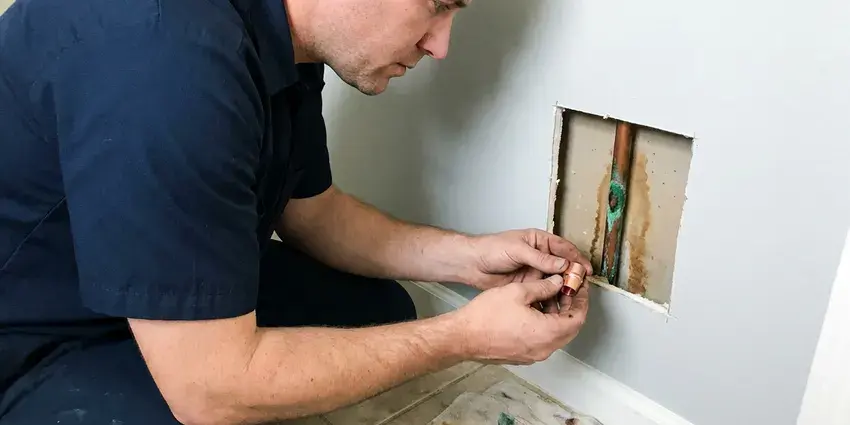

Sewer Repair in Bellflower, CA
For professional sewer repair services across Bellflower, CA, look no further than FKM Plumbing. Our licensed plumbers are ready to restore your home's plumbing.
- Honest Pricing
- Long-Lasting Repairs
- Spot Repairs or Full Replacement
- Fast Sewer Diagnostics

Is Your Sewer Line Backed Up? Get Professional Repair in Bellflower, CA.
We're ready to handle any sewer issue, big or small, making sure your system runs smoothly again.
Sewer Repair in Bellflower, CA for Cracked, Rooted and Collapsed Lines
At FKM Plumbing, we provide durable sewer repair solutions to keep your plumbing system functioning correctly. Whether it's an aging pipe, a stubborn clog or invasive roots, our trained technicians in Bellflower, CA have the tools and experience to diagnose and resolve the issue with minimal disruption.
Our expertise includes:
- Tree Root Removal Services
- Traditional Dig-and-Replace Repairs
- Video Camera Sewer Inspections

Additional Plumbing Repair Services in Bellflower, CA
We offer expert plumbing repair services across Bellflower, CA to stop leaks, clear blockages, and keep every fixture working the way it should.


Customers
Why Choose FKM Plumbing for Sewer Repair in Bellflower, CA?
Choosing FKM Plumbing means selecting a team dedicated to restoring your sewer system with minimal fuss. We prioritize clear communication and efficient service, getting your home back to normal fast.
- Advanced Tools, Our technicians use state-of-the-art equipment for accurate diagnosis and effective repair of all sewer line issues.
- Local Knowledge, We understand the plumbing challenges faced by homeowners in Southern California, including soil conditions and weather effects on sewer lines.
- Trained Technicians, Our plumbers are highly experienced in all aspects of sewer system diagnosis and repair.
Citywide Coverage
FKM Plumbing is dedicated to serving every neighborhood and community within Bellflower. We understand that sewer emergencies can happen anywhere, and our local teams are placed to provide prompt service across the entire area.
Experienced Team
Our sewer repair team at FKM Plumbing brings years of hands-on experience to every job. Each technician is thoroughly trained in diagnosing complex sewer issues and making effective, long-lasting repairs, tailored to the conditions found in Southern California homes.
Safety-First Approach
Safety is our top priority for every sewer repair project in Bellflower. We stick closely to all local and state plumbing codes and safety regulations, using proper excavation techniques and personal protective equipment. Our processes are designed to protect your property, our team and your family throughout the repair.
Trusted Certified Bellflower Plumbing Services Professionals
At FKM Plumbing, we take pride in providing licensed, certified plumbing services throughout Bellflower, CA. Backed by recognized industry credentials, our experienced plumbers combine technical skill with genuine customer care. Whether it is repair, installation, or maintenance, we follow strict safety and quality standards to deliver long-lasting results you can trust.
Call Us Now PHCC Plumbing Contractor Recognition
PHCC Plumbing Contractor Recognition Better Business Bureau (BBB) Accreditation
Better Business Bureau (BBB) Accreditation Angi Certified Pro
Angi Certified Pro ISO 9001 Quality Management Certification
ISO 9001 Quality Management CertificationTrusted Sewer Repair Services in Bellflower, CA
Cracked and Broken Pipe Repair in Bellflower
Clay and cast iron sewer pipe crack from soil movement, heavy vehicles and simple age. A cracked section lets sewage leak into the soil and lets dirt fall into the pipe, which leads to repeat clogs. We excavate at the marked spot, cut out the damaged length and install new Schedule 40 PVC with shielded couplings rated for the transition. The repair is tested before we backfill so you know it will hold.

Sewer Line Backups and Blockages in Bellflower
Sewer backups are often caused by severe blockages from grease buildup, foreign objects or heavy tree root intrusion. Our team uses HD sewer camera inspections to identify the exact cause and location of the blockage. We then use hydro-jetting or mechanical snaking to clear the obstruction, restoring proper flow to your system and preventing further damage. This approach is very effective for the stubborn clogs often found in older Southern California homes.
Sewer Line Leak Detection & Repair in Bellflower, CA
Undetected sewer line leaks can lead to unpleasant odors, wet spots in your yard and even structural damage to your home's foundation. FKM Plumbing uses accurate leak detection methods to pinpoint the source of the leak, whether it's a minor crack or a major break. Once identified, we provide targeted repairs, from patching small leaks to replacing compromised sections of pipe, ensuring a watertight system.
Traditional Sewer Line Replacement in Bellflower
When trenchless repair isn't possible due to severe damage or specific pipe configurations, traditional dig-and-replace methods are necessary. This involves excavating a trench to access and replace the damaged section of the sewer line. While more intrusive, it is sometimes the only way to address severely collapsed pipes, significant offsets or certain pipe materials common in older Southern California properties. Our team makes sure of careful excavation and efficient replacement, minimizing the impact on your property in Bellflower.
Sewer Pipe Relining in Bellflower, CA
Sewer pipe relining is a trenchless repair method where a new, durable pipe is created within the existing damaged one. A flexible, epoxy-impregnated liner is inserted into the old pipe and inflated, curing in place to form a seamless, strong and corrosion-resistant new pipe. This method is effective for addressing cracks, minor breaks and root intrusion without major digging. It extends the life of your sewer system and is an excellent option for preserving landscapes in Bellflower.
Emergency Sewer Repair in Bellflower
Sewer emergencies, like major backups or foul odors, need immediate attention. FKM Plumbing offers rapid response for emergency sewer repair throughout Bellflower. Our team is on standby to diagnose and fix urgent problems, preventing further damage to your property and restoring sanitation. We prioritize these critical issues so your home's plumbing is quickly brought back to safe operating condition, even outside of regular business hours.
Trenchless Sewer Line Repair in Bellflower, CA
For many sewer line issues, especially those caused by tree roots or pipe corrosion, trenchless repair offers a less invasive solution. This method, which includes pipe bursting or pipe lining, requires minimal excavation, saving your yard and landscaping from extensive disruption. We use specialized equipment to either pull a new pipe through the old one or insert a resin-coated liner that cures in place, creating a new, durable pipe inside the old one. It's an efficient and popular choice for preserving property appearance in Bellflower.

Sewer Pipe Replacement Options in Bellflower, CA
When repairs are no longer sufficient due to extensive damage, age or material failure, sewer pipe replacement becomes necessary. We offer various replacement options, including traditional trenching and modern trenchless technologies like pipe bursting or pipe lining. Our experts will assess your situation and recommend the most cost-effective and least disruptive solution for your Southern California property, giving you a long-lasting new sewer line.
Sewer Repair Near Me in Bellflower, CA
Being local also means we know the soil, the typical pipe materials and the city inspection process here. That knowledge speeds up the job and avoids surprises once the trench is open. Call us and we will schedule a sewer camera inspection at a time that suits you.
No matter where you are in the greater Bellflower area, our skilled plumbers are ready to address your sewer repair concerns quickly and professionally. We understand the urgency of sewer problems and strive to deliver fast, effective service right to your doorstep.
FKM Plumbing at a Glance
- Licensed and insured plumbers serving Bellflower, CA
- 24/7 emergency service with same-day scheduling
- Clear written estimates, no hidden fees
- 4.8-star rated by 754+ Southern California customers
Bellflower Map
Bellflower Information
- Population
- 75,122
- Area codes
- 562/714/626
- Service area
- Bellflower and communities within 40 miles
- Nearby
- Lakewood, Norwalk, Downey, Lynwood
Sewer repair in Bellflower, CA is often complicated by shifting soil and mature trees, which strain underground pipes and invite root intrusion. Expansive clay and hillside soils can shift over time, putting stress on slab plumbing and separating older sewer joints.
Expert Services
Trust our professionals for reliable FKM Plumbing solutions in Bellflower, CA.
Our Specialized Plumbing Services in Bellflower, CA
At FKM Plumbing, we provide a complete range of plumbing services across Bellflower, CA. From leak detection to full system installations, our team ensures fast, precise, and affordable service for both residential and commercial properties. Explore our core services below:


Here Is How Our Sewer Repair Process Works in Bellflower, CA
Our approach combines advanced diagnostics with expert workmanship to resolve your sewer issues with minimal hassle.
Request a Quote
Call (213) 871-0701 and tell us about the backups, odors or slow drains you are noticing. We will book a camera inspection, often for the same day.
Camera and Locate
We inspect the line on video, mark the damaged spot on the surface and note its depth. You get a written quote with every repair option and its cost.
Repair and Test
Our crew calls 811, makes the repair and runs water through the line to confirm it flows. We backfill, clean up and send a final video for your records.
Frequently Asked Questions About Sewer Repair in Bellflower
The cost of sewer repair in Bellflower, CA can vary a lot, typically ranging from $500 for minor spot repairs to $3,000 for extensive trenchless work, and up to $10,000 or more for full trench-based sewer line replacement. Factors like the extent of damage, type of repair, pipe material, depth and accessibility all influence the final price. We provide a detailed estimate after a full inspection.
Standard policies frequently exclude wear, tear and root damage to the sewer line itself, though they may cover resulting water damage inside the home. Some insurers offer a service line endorsement. We provide video and written documentation if you file a claim.
Many cities require a permit for sewer line replacement and for any work in the public right-of-way. Small repairs on private property may not, depending on local rules. We check with your city and pull the permit when it is needed.
To prevent future sewer line problems, avoid flushing anything other than toilet paper, dispose of grease properly and be mindful of what goes down your drains. Consider having yearly professional drain cleaning or sewer inspections, especially if you have older pipes or mature trees near your sewer line. Regular maintenance can identify small issues before they become major problems.
We work with all common types of sewer pipe found in Bellflower and Southern California, including PVC, ABS, cast iron, clay and Orangeburg. Our technicians are skilled in repairing and replacing lines made from various materials, providing compatibility and durability with current plumbing standards. We also use high-quality, code-compliant replacement materials.
The length of a sewer repair depends heavily on the scope of work. Simple spot repairs or hydro-jetting might take a few hours. Trenchless repairs like pipe lining can often be completed in one to two days. Full sewer line replacements involving excavation can take anywhere from two to five days, depending on the length and complexity of the line.
A small rental auger can clear a soft clog, but it will not fix a crack, belly or root intrusion. Forcing a cable through a broken pipe can make the damage worse. A camera inspection tells you whether you have a clog or a structural problem.
Trenchless sewer repair is a method of repairing or replacing sewer lines with minimal digging, often requiring only one or two access points. It involves techniques like pipe bursting, where a new pipe is pulled through the old one, or pipe lining, where a resin-impregnated liner is inserted and cured inside the existing pipe. This preserves your landscaping and is less disruptive than traditional methods.
What People Are Saying About Our Plumbing Experts?

Sofia M.
Two new toilets installed in one visit, no mess left behind, and the tech even adjusted a faucet he noticed was dripping. Fair pricing and really friendly.
Toilet Installation · Compton, CA
Robert G.
The trenchless sewer replacement saved our front yard. They walked us through the camera inspection footage first so we knew exactly what we were paying for.
Sewer Line Replacement · South Gate, CA
Emily R.
I called FKM Plumbing for plumbing repair, and the technician was fast, polite, and thorough. They explained the problem clearly and fixed it the same day. I will definitely hire them again. Highly recommended!
Plumbing Repair · Lakewood, CALaura S.
I scheduled a water heater replacement, and the team made the process smooth and affordable. The new unit works perfectly, and they cleaned up after completing the job.
Water Heater Replacement · Lakewood, CA
Patricia H.
We had a slab leak that two other companies could not find. FKM Plumbing located it in under an hour, explained our options, and the price matched the quote to the dollar.
Slab Leak Repair · Norwalk, CAJames P.
Our commercial plumbing system had a leak under the sink, and FKM Plumbing handled it professionally. The plumbers arrived quickly and restored everything without disruption to our customers.
Commercial Plumbing · Compton, CA